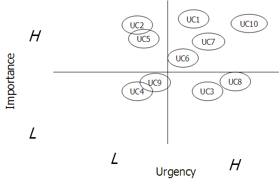

OUM |
Technique Overview |
||
Method Navigation |
Current Page Navigation |
||
|
|
||||||||
Typically, this technique is done for the detailed functional requirements covered in the use cases for the system under discussion (SuD). Use this technique whenever assistance is needed in evaluating use cases based on customer priority.
2 x 2 Urgency/Importance Matrix - The 2 X 2 Urgency/Importance Matrix is used to help prioritize use cases and requirements. The purpose is to graphically plot each use case on the matrix. This assists in determining which use cases are the most important based on the balance between two basic criteria:
The result looks like the illustration below:

No. |
Step | Component | Component Description |
|---|---|---|---|
1 |
Review the use cases that describe how the requirements will be satisfied. | ||
2 |
Prepare a 2 x 2 Urgency/Importance Matrix. | 2 x 2 Urgency/Importance Matrix | The 2 x 2 Urgency/Importance Matrix is used to help prioritize use cases and requirements. |
3 |
Plot each use case on the matrix showing based on the urgency to have the functionality and the importance of the use case to the business. | 2 x 2 Urgency/Importance Matrix | Use cases with the highest urgency and highest importance on the 2 x 2 Urgency/Importance Matrix have the highest priority. |
4 |
Record the results in the MoSCoW list (RD.045), using the Customer Priority column of the Use Case Catalog . |
This is only one of four criteria used to evaluate use cases and assists in providing development priority. The other three criteria being Risk, Complexity and Use Case Dependancy.
This technique can be used when there is difficulty in establishing the business priority of the functional requirements, contained in each use case. The 2 x 2 Urgency/Importance Matrix uses the importance of the use case to the business and the urgency to have the functionality available in combination to determine priority in balancing these two criteria. The premise is that importance is a measure of value to the business and urgency is a measure of how quickly the business needs this functionality. The upper right quadrant contains use cases with the highest priority and the lower left quadrant contains use cases with the lowest priority.
The resulting priority can be recorded in the MoSCoW Use Case Catalog (RD.045). Subsequently this is one of the four criteria used to develop the iteration groups for projects that include use case development in addition to standard COTS functionality recorded in the High Level Software Architecture (RA.035)
There are no templates available to assist with this technique.
This technique is recommended for use in the following OUM tasks:
| Task | Usage |
|---|---|
| Use this technique to prioritize high-level use cases. | |
| Use this technique to prioritize items on the MoSCoW List. | |
| Use this technique to prioritize use cases for each iteration group. |
Use the following criteria to check the quality of this technique:
This section is not yet available.

Copyright © 2006, 2016, Oracle and/or its affiliates. All rights reserved.